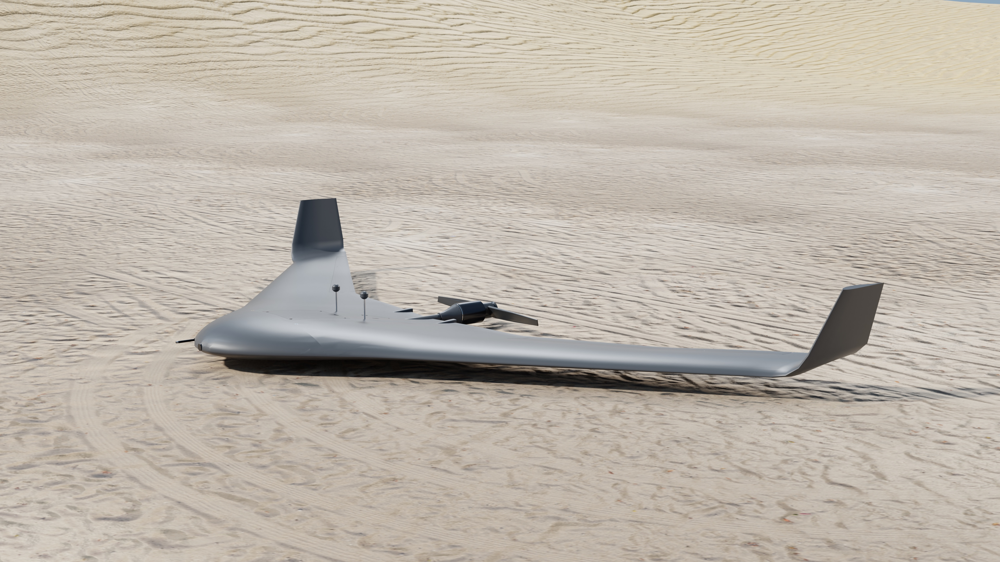
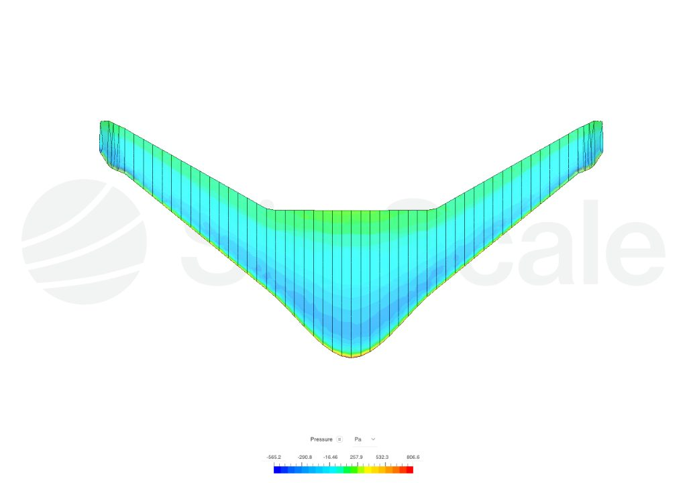
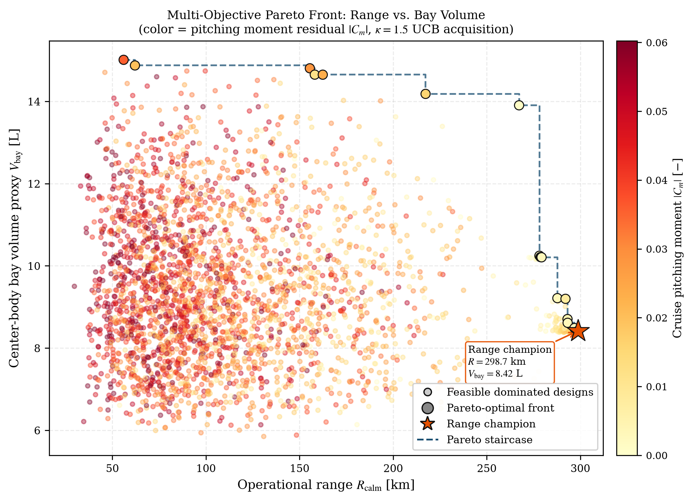
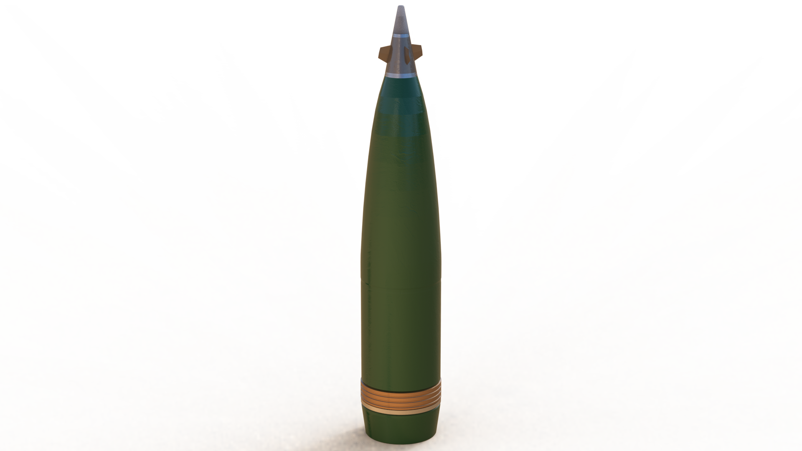
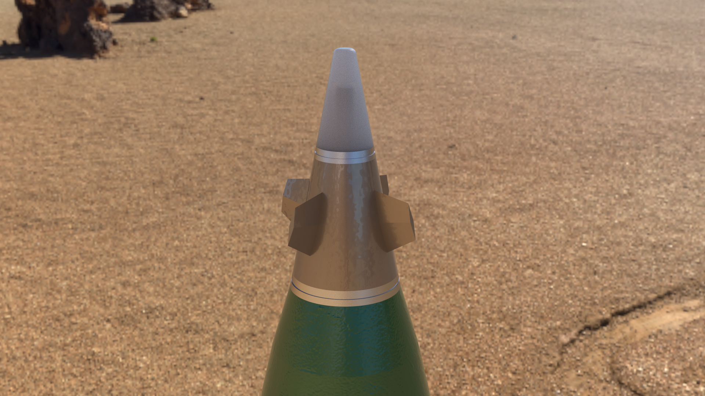
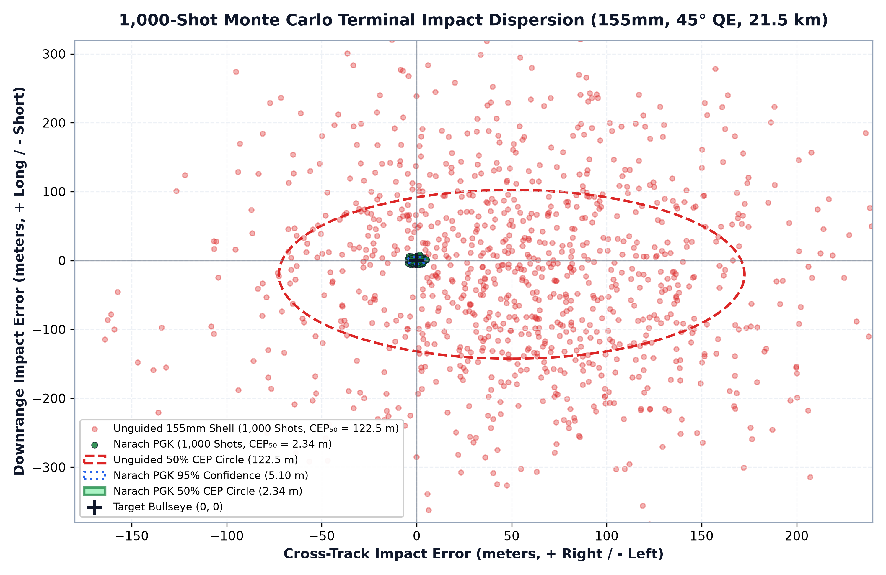

When global optimizers are coupled with low-order vortex lattice methods (VLM), they discover numerical loopholes in the solver rather than viable physics: non-monotonic chord reversals, severe camber reflex, and panel aspect ratio singularities reporting non-physical glide ratios exceeding 28. How we formulated C1-continuous Hermite manifolds to enforce geometric invariants, and what 3D RANS CFD revealed about the 124% parasite drag rise at winglet junctions.
Read writeup →Selected Writeups & Engineering Notes
Technical Investigations
At 300 rps (18,000 RPM) muzzle rifling spin, canards cannot execute coherent trajectory corrections without actuator saturation. We decouple the forward steering head from the projectile body using a 1-DOF roll-isolated collar on dual angular contact bearings. Supported by passive permanent magnet eddy-current damping, the collar attenuates roll from 300 rps to below 5 rps in 1.2 seconds, enabling terminal Augmented Proportional Navigation (APN) and 16-state EKF estimation through 25-second GNSS denial windows.
Read writeup →Generative 3D polygon meshes cannot be manufactured on physical CNC mills or lathe tooling; real engineering requires Boundary Representation (B-Rep) solids with exact datum planes, mate constraints, and editable parametric feature trees. Architecture of onshape-mcp: a Model Context Protocol server connecting LLMs to the Onshape cloud REST API for bidirectional feature-tree tracking and topological constraint enforcement.
Read writeup →Lessons from 5 merged pull requests in the scikit-learn ecosystem (probabl-ai: skrub and skore). How unintended eager evaluations on Polars lazyframes degrade memory locality during complex tabular feature encoding, and designing figure legend export persistence across matplotlib backends.
View contributions in CV →Academic Preprints
Research Manuscripts & Preprints
Physics-Regularized Geometric Manifolds for Efficient Surrogate-Assisted MDO of Tailless BWB UAVs
Engineering Evidence & Figures
Visual & Simulation Archive
Selected high-resolution simulation telemetry, aerodynamic renders, and CAD mechanisms. Click any plate to inspect.

Aerodynamics • Airframe
Tailless BWB UAV Cruise Flight

CFD • Validation
SimScale 3D RANS Pressure Distribution

MDO • Surrogate
Pareto Front: Glide Ratio vs Volume

Ballistics • Munitions
155mm Shell with Precision Guidance Kit

Mechanisms • Roll Despin
Passive Despin Collar & Bearing Macro

GNC • Monte Carlo
1,000-Shot Impact Dispersion (2.34m CEP)